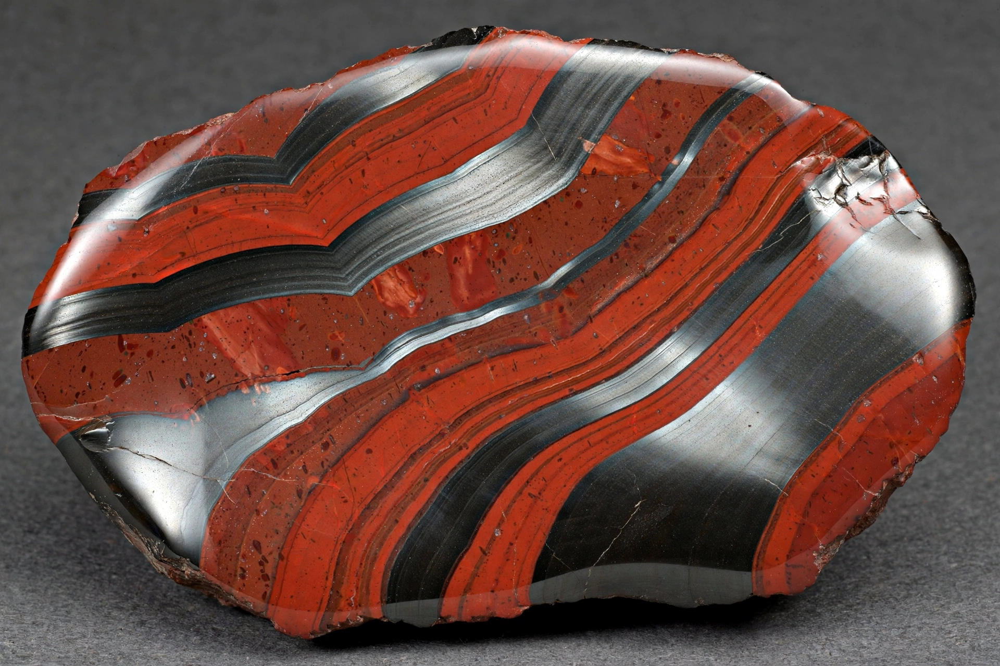

Banded iron formation

| Banded iron formation | |
|---|---|
| Abbreviation | BIF |
| Composition | Alternating chert and iron oxides (hematite, magnetite), iron carbonates and silicates |
| Age | Mainly 2.7–2.4 billion years (Archean–early Proterozoic); minor later examples |
| Major deposits | Hamersley (Australia), Lake Superior (USA/Canada), Krivoy Rog (Ukraine), Quadrilátero Ferrífero (Brazil), Transvaal (South Africa) |
Banded iron formations (BIFs) are sedimentary rocks consisting of repeated thin layers of iron-rich minerals — chiefly hematite and magnetite — alternating with bands of silica-rich chert, sometimes with iron carbonate and silicate layers. They are the world's principal source of iron ore, and their deposition records one of the most consequential events in Earth history: the oxygenation of the oceans and atmosphere.
Formation
Most BIFs were deposited between about 2.7 and 2.4 billion years ago, peaking around 2.5 billion years ago. In the anoxic early oceans, iron weathered from the continents and supplied by hydrothermal vents could remain dissolved in seawater as Fe²⁺. As photosynthetic cyanobacteria began releasing oxygen, the dissolved iron was oxidised to insoluble Fe³⁺ and precipitated onto the sea floor, alternating with silica-rich layers to produce the banding. The great pulse of BIF deposition coincides with the Great Oxidation Event (c. 2.4 billion years ago), after which free oxygen began accumulating in the atmosphere. Precipitation may also have been driven directly by iron-oxidising (photoferrotroph) bacteria. A smaller revival of BIFs occurred around 700 million years ago in association with the Snowball Earth glaciations, when ice cover again isolated the oceans from the atmosphere.
Economic importance
High-grade iron ore is produced from BIFs that have been enriched by later weathering and hydrothermal processes (to 60%+ iron). The largest districts include the Hamersley Range of Western Australia, the Lake Superior ranges (Mesabi and others) of the United States and Canada, Krivoy Rog in Ukraine, the Carajás and Quadrilátero Ferrífero deposits of Brazil, and deposits in South Africa, China and India.